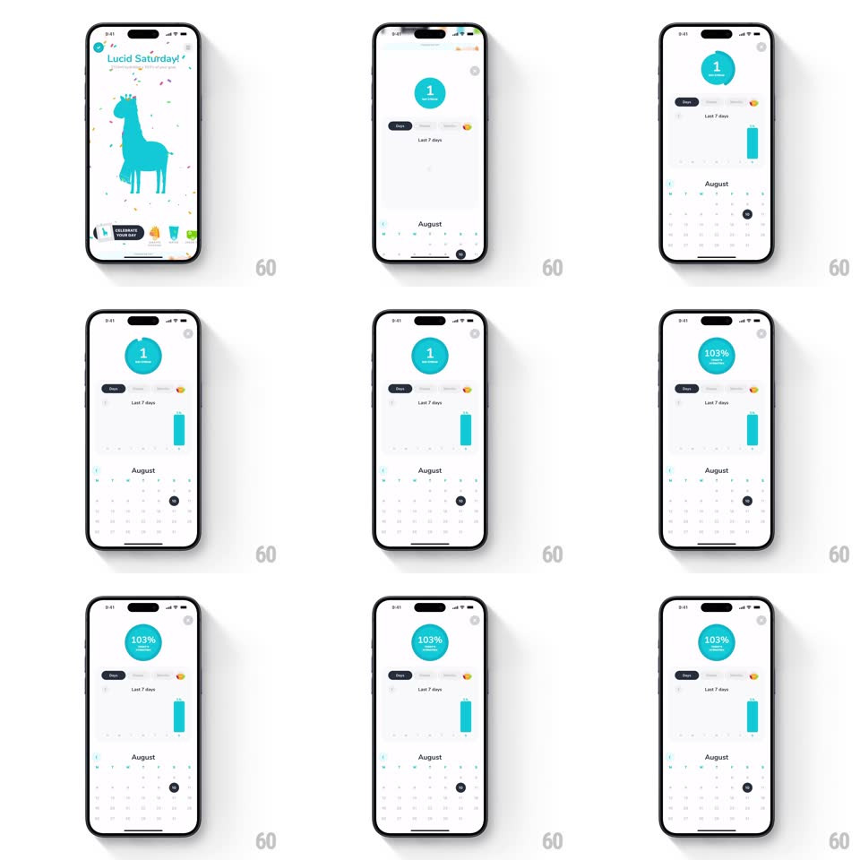

Media
Frame-by-frame

Rebuild this interaction 1:1: Waterllama's streak badge flip - tap the circular streak badge and it card-flips with a spring to reveal your average hydration percentage on its back.

Rebuild this interaction 1:1: Waterllama's streak badge flip - tap the circular streak badge and it card-flips with a spring to reveal your average hydration percentage on its back.
## Integration
Integration: stack-agnostic spec - springs given as stiffness/damping, timed motions as duration + curve; map every value to your framework and animation library of choice.
## Scene
A stats screen: a large teal circle badge ("1 / DAY STREAK") above a segmented control ("Day"), a "Last 7 days" bar chart with a single tall teal bar, and an August calendar grid with one filled day dot.
## Motion spec
Pattern: springy 3D card-flip badge.
- Tap the badge: it flips around its vertical axis (rotateY 0 to 180deg, spring ~320/18, 500ms total with a slight overshoot past 180 that settles back) with a light haptic at tap.
- At the 90deg edge-on moment the face swaps: front ("1 DAY STREAK" with the teal disc) hands off to back ("103% AVERAGE COMPLETION" on the same teal disc, mirrored content corrected).
- The flip carries a soft moving highlight across the disc (gradient sweep synced to rotateY) so the surface reads glossy, not flat.
- While flipping, the badge's drop shadow swings to match the rotation direction (shadow offset tweens with the angle).
- Tap again (or 4s idle): flips back along the same spring.
- The surrounding stats (bar chart, calendar) stay rock still - the badge is the only toy on the screen.
## Calibration
- Both faces use identical layout so the swap at 90deg is invisible; only the numbers differ.
- Perspective must be subtle (m34 ~ -1/800); too deep a perspective makes the disc look warped.
## Reduced motion
Faces crossfade; no rotation.
## Don't miss
- The badge content is centered two-line type both ways (big number over small caps label).
- The flip is on tap, not on entering the screen - it's a discovery, not an entrance.